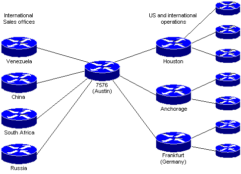

The exercise is part of case study describing IPX routing in Great Coals network shown below:

To improve the EIGRP convergence and stability in the network, the network design uses hierarchical default routing. Please refer to "Case Study - GreatCoals network" in Chapter 10 for more details. Solving Exercise 10-2 is a prerequisite for this exercise.
How could you improve
the GreatCoals design to solve the low-speed international link
bottleneck?
There are two possible solutions for this exercise:
The router configuration command needed to implement the second solution are as follows:
hostname Core-7576 ! ipx routing ipx internal-network FFFFFF01 ! interface serial 1/2/3 description Link toward China ipx network 12345 ipx sap-incremental eigrp 131 rsup-only ipx advertise-default-route-only 12345 ! ipx router eigrp 131 network all distribute-list DefaultOnly out ! ipx router rip network 12345
corresponding commands on the China router are
hostname China ! ipx routing ! interface serial 0 description Link toward Austin ipx network 12345 ipx sap-incremental eigrp 131 rsup-only ! ipx router eigrp 131 network all ! ipx router rip network 12345